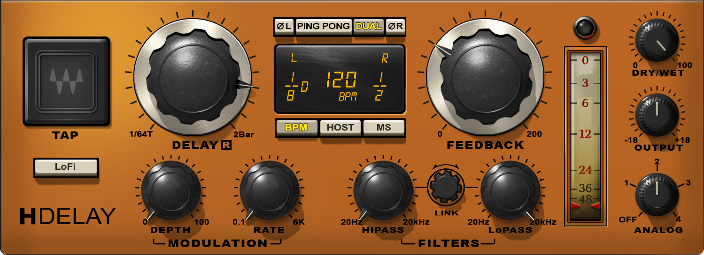
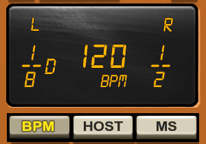
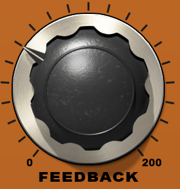
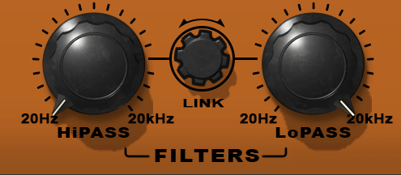

人声空间 · Waves H-Delay
01 / 08
给人声一点空间
低 Wet 的 Ping Pong Delay
主唱已经够清楚，只想再添一点空间？
让少量延迟信号在左右交替，
用干湿比例控制它的存在感。
1
2
3
4
Waves 官方界面，仅用于定位控件。
图为 DUAL / BPM 状态；参数不是本教程设置。
① DELAY R
时间位置（图中为 R 声道）
② FEEDBACK
后续重复
③ DRY/WET
干湿混合
④ HiPASS / LoPASS
延迟声部的音色
先把时间、反馈和滤波分开调。
界面：Waves 官方产品页 · © Waves Audio Ltd.
人声空间 · Waves H-Delay
02 / 08
低 Wet 插入，信号怎么走？
插在人声轨，干声与 Delay 在插件内部混合。
单声道人声选 M>S；立体声轨选 Stereo。
H-Delay 内部
人声
干声支路
Delay 支路
Feedback：取一部分回送
+
Dry/Wet
混音
功能路由示意，不是插件内部精确 DSP 电路。
如果改用发送
原人声直接进混音；效果轨 Dry/Wet 设为 100。
只返回处理后的信号，
再用发送量或返回推子调多少。
Dry/Wet 5 是插件读数，
不能直接当成干湿电平比或响度比。
功能依据：Waves H-Delay User Guide · 路由为示意

人声空间 · Waves H-Delay
03 / 08
同一个 1/8，速度不同就不同
普通时值 · 固定速度 · 四分音符为一拍
0
50
100
150
200
250
ms
120
BPM
1/8
250 ms
1/16
125 ms
160
BPM
1/8
187.5 ms
1/16
93.75 ms
120 → 160 BPM：同一音符时长缩短 25%
1/8 = 60,000 ÷ BPM ÷ 2（ms）
1/16 = 60,000 ÷ BPM ÷ 4（ms）
HOST 跟随工程速度；歌词密度仍需试听。
确认普通 1/8
160 BPM：
普通 1/8 = 187.5 ms
1/8D = 281.25 ms（长 50%）
手册默认 1/8D；加载预设后复核。
Waves 官方局部：120 BPM / 1/8D / 1/2，BPM 状态。
仅辨认字符，非本教程设置。© Waves Audio Ltd.
计算：60,000 / BPM · 默认时值：H-Delay User Guide p.8
人声空间 · Waves H-Delay
04 / 08
Ping Pong，交替的是延迟声部
160 BPM · 普通 1/8 · 单次短输入 · 从左开始
0
187.5
375
562.5
750
L 左
R 右
干声
0 ms
第 1 次
第 2 次
第 3 次
第 4 次
同侧间隔 375 ms
时间 / ms
相邻重复间隔 187.5 ms。
干声保持原有声像，延迟声部提供左右运动。
选 Stereo 或 M>S，
打开 PING PONG。
Feedback 显示值 > 1
Waves 官方局部，仅定位按钮，不表示已开启。
© Waves Audio Ltd.
必要时暂时提高 Dry/Wet 辨认，再收回低 Wet。
时序示意，非实测；左右起点可换，点大小不表示振幅。
“> 1”为插件读数，不是模型系数 g。
功能与门槛：Waves H-Delay User Guide p.4、p.10

人声空间 · Waves H-Delay
05 / 08
Feedback 管重复，Dry/Wet 管混合
把第 1 次延迟信号的振幅统一为 100。
假设每次反馈回送固定比例，看后续怎样衰减。
FEEDBACK
第一下合适，
后面拖太久
→ 先减它
DRY/WET
整个延迟声部
太明显
→ 先减它
Waves 官方局部；旋钮位置不是教程起点。© Waves Audio Ltd.
模型 g = 0.3
每次回送 30% 振幅
模型 g = 0.6
每次回送 60% 振幅
0
50
100
100
100
第 1 次
30
60
第 2 次
9
36
第 3 次
2.7
21.6
第 4 次
第 4 次：21.6 ÷ 2.7 = 8 倍振幅
理想线性模型：第 n 次振幅 = 100 × g⁽ⁿ⁻¹⁾。
不含滤波和饱和；g 不是 H-Delay 旋钮读数。
图为计算示意，振幅倍数不等于响度倍数。
反馈定义：Waves / FabFilter · 数列为独立计算

人声空间 · Waves H-Delay
06 / 08
滤波，让延迟声部让出位置
高通减少低频，低通收暗高频。
只处理延迟声部；实际效果放回伴奏判断。
Waves 官方滤波区；图中旋钮位置不是教程设置。
© Waves Audio Ltd.
HiPASS · 200 Hz
LoPASS · 6 kHz
向低频侧衰减
向高频侧衰减
20
100
1k
10k
20k
对数频率 / Hz
低频仍浑：HiPASS 200 → 300 Hz
齿音突出：LoPASS 6 → 4 kHz
一次只改一个截止点；太薄或太暗就往回调。
数值仅为试听起点；图只表示滤波方向。
截止点外逐渐衰减，不是完全切除或实测频响。
功能：H-Delay User Guide · 200 Hz / 6 kHz 为本文试听起点
人声空间 · Waves H-Delay
07 / 08
从这组参数，做一次对照
整组为试听起点，不是官方预设。
H-Delay
M>S 或 Stereo
PING PONG
开
HOST
普通 1/8（无 D/T）
FEEDBACK / DRY/WET
20 / 5
HiPASS / LoPASS
200 Hz / 6 kHz
数字按 H-Delay 显示值记录。
先减少变量
ANALOG OFF · LoFi 关 · MODULATION DEPTH 0
ØL / ØR 关
带伴奏，循环同一段
1 固定其他参数：Dry/Wet 0、3、5、8。
2 选定混合后：比较普通 1/8 与 1/16。
3 尾巴太久，Feedback 从 20 往下收；
需要更多延续，再小幅增加。
每次只听一个变化。数字不是干湿电平比例；
留意输出峰值，避免削波。
操作清单：本文试听建议 · 功能名称按 Waves 手册
人声空间 · Waves H-Delay
08 / 08
最后，回到整首歌
先找到问题，再动对应的控制项。
延迟声部太抢耳
Dry/Wet
后续重复拖太久
Feedback
重复挤住咬字
1/8 / 1/16
再检查 Feedback
低频浑 / 高频刺
HiPASS / LoPASS
分别调整
最后做三个检查
带伴奏
歌词、句尾、下一句仍然清楚吗？
匹配响度
尽量匹配开关前后的响度，
再判断空间感。
折叠单声道
合并 L + R，
听音色、音量和平衡是否明显变差。
合适就好，已经够了就不必再加。
单声道检查不是只听左声道。未经音频实测，
固定设置不保证更宽、更清楚或兼容单声道。
诊断为试听建议 · 参考 Waves、iZotope 官方教程